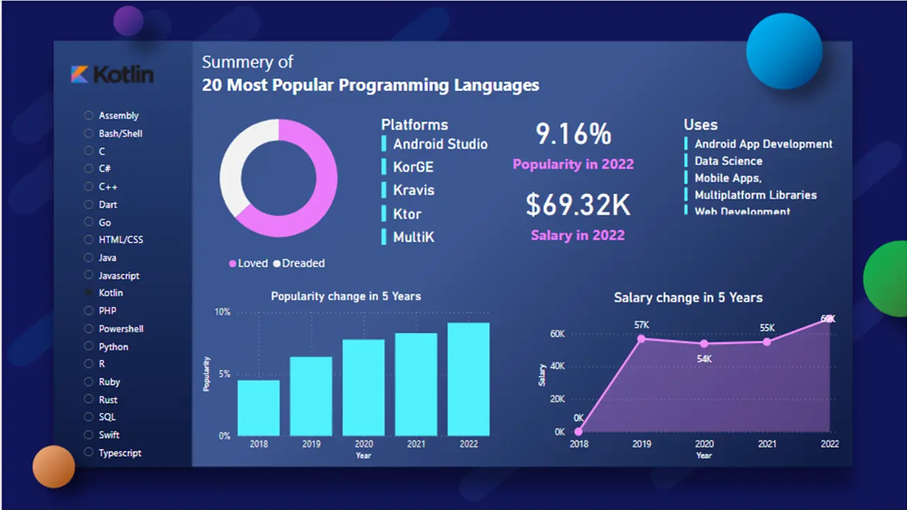

Kotlin is a modern, trending programming language that was released in 2016 by JetBrains.
It has become very popular since it is compatible with Java (one of the most popular programming languages out there), which means that Java code (and libraries) can be used in Kotlin programs.
Kotlin is used for:
Mobile applications (specially Android apps)
Web development
Server side applications
Data science
And much, much more!

What is Python?
Python is a popular programming language. It was created by Guido van Rossum, and released in 1991.
It is used for:
web development (server-side),
software development,
mathematics,
system scripting.